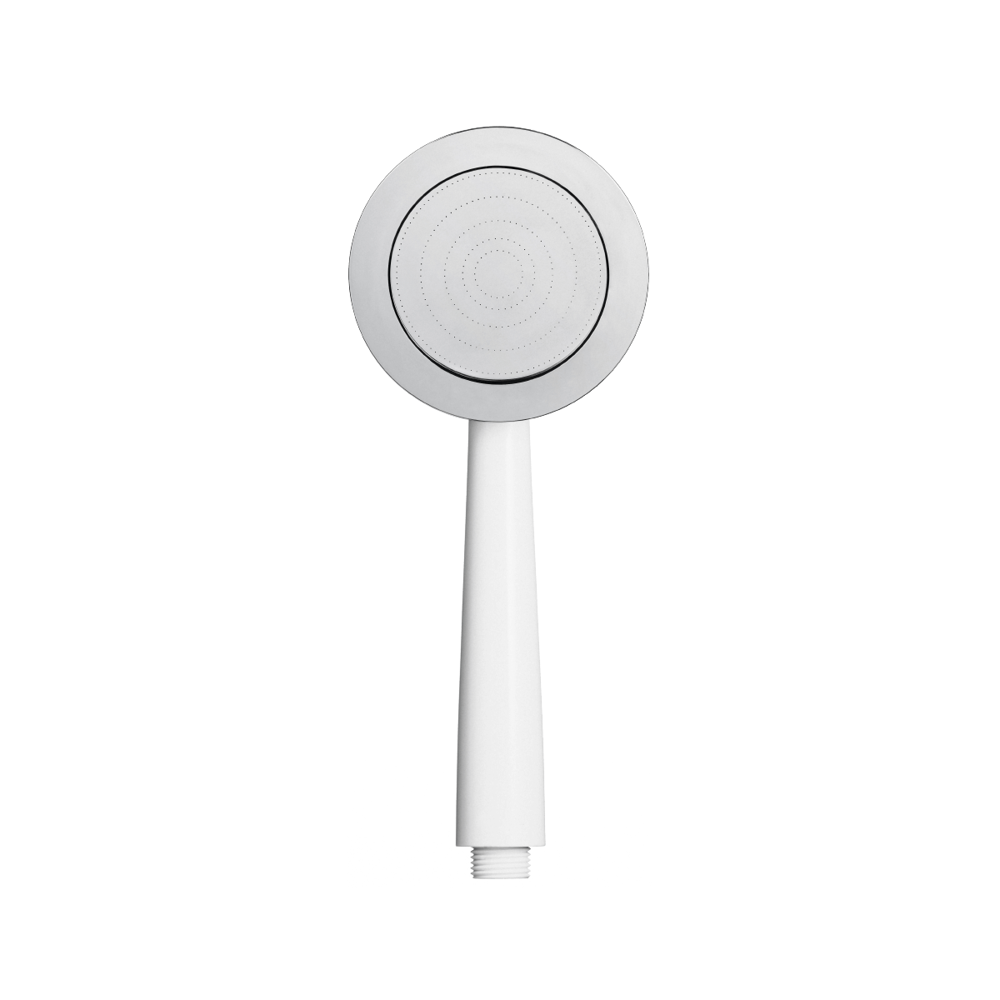

除氯省水蓮蓬頭 TYS-101


商品描述
五大商品特色，有效淨化居家洗浴用水
【去除氯氣】
呵護肌膚，享受SPA級沐浴淨水
【加壓省水】
極密出水孔節約水量，省錢又環保
【貼心設計】
可拆式結構，美型好清洗
【呵護健康】
減少三鹵甲烷產生，保護人體及肌膚
【呵護秀髮】
去除餘氯雜質，使髮質健康，不易乾澀
- 超強過濾除氯效果，呵護全家人的肌膚
- 三重過濾，濾除雜質、鐵鏽、水中餘氯
- 打造黃金出水比例 綿密細緻 不造成強壓水注
- 精準控制出水量 省錢同時擁有高品質
- 省水最高達50%
- 通用規格，30秒無痛更換
- 拆卸清洗超容易、髒污不殘留
- 義大利 A’Design 設計獎認證
- 不只實用，更是美型
商品內容
- 除氯省水蓮蓬頭1入
商品規格
| 品名 | TOYO除氯省水蓮蓬頭 |
| 尺寸 | 100 x 85 x 250mm |
| 材質 | ABS |
| 適用溫度 | 4~40 度C |
| 適用流量 | 6 L /min |
| 適用水壓 | 20~80psi |
| 適用濾心 | TA-101 |
| 主要濾材 | 日本亞硫酸鈣 |
| 總淨水量 | 10000 L |
| 產地 | 台灣 |